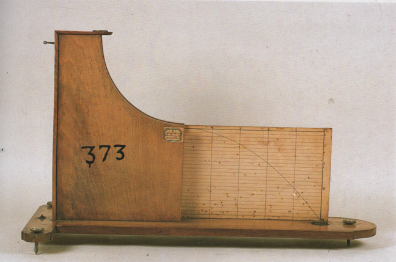

Macchina per lo studio dei moti parabolici
Scuola di provenienza: Liceo classico "P. Colletta", Avellino
Settore: Meccanica
Costruttori: Sconosciuto
Materiali: Legno
Accessori: Sferetta
Stato di conservazione: Buono
Descrizione: Con questo strumento si può verificare la legge di composizione dei moti cinematica del punto materiale, qui approssimato con una piccola biglia. In particolare, si ha l´immediato riscontro visivo che un corpo soggetto all´accelerazione di gravità e scagliato in avanti con una certa velocità descrive, cadendo a terra, un tratto di parabola appartenente al piano individuato dai due vettori (velocità e accelerazione di gravità) che caratterizzano il moto. Manovrando il dispositivo di rilascio della biglia, essa percorre lo scivolo incrementando gradualmente la propria velocità. Quindi, non appena la biglia lascia lo scivolo con una certa velocità (con direzione parallela al suolo per costruzione), essa si troverà soggetta all´accelerazione di gravità: il piano di traiettoria risulta dunque perpendicolare al suolo. Ora si immagini un sistema di riferimento cartesiano con vertice posizionato in corrispondenza della fine dello scivolo, asse delle y orientato verso il basso e asse delle x orientato nel senso del moto. Per studiare la traiettoria della biglia si analizzano i due moti indipendenti lungo gli assi del sistema di riferimento scelto.